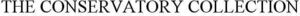

Trade Mark Journal No.2025/029 18 July 2025
WO0000001861349 (43)
Office of origin: United States of America
Date of International Registration:18 April 2025
Date of designation in the UK:
18 April 2025

International priority date claimed: 17 April 2025
(United States of America)
(99142764)
- Class 43
- Providing online reservations and bookings for temporary lodging and accommodations; providing information for making reservations and booking of hotels and temporary accommodations via a website; booking of temporary accommodation; booking services for hotels; temporary accommodation reservation services; accommodation finding services; travel agency services, namely, making reservations and bookings for temporary lodging, hotels, and restaurants; hotel and resort services; providing temporary accommodation; resort lodging in luxury tents, yurts, cottages, recreational vehicles, campers, hammocks, and prefabricated containers; guest houses, namely, rental of guest houses as temporary living accommodations; rental and booking of rooms as temporary housing accommodation and meeting rooms; providing social meeting and social function facilities for business, social, leisure, and transient meetings and gatherings, namely, providing community centers for social gatherings and meetings; restaurant services; bar services; cocktail lounge services; banquets and banqueting services, namely, providing banquet and social function facilities for special occasions; bistro services; cafe services; cafeteria services; coffee shop services; canteen services; snack bar services; wine bar services; take away food services; catering services; services for providing food, drink, and meals; cooking services; food preparation services; arranging of food, drink, meals, and catering for wedding receptions; arranging of wedding reception venues; child care and child minding services; provision of facilities for conferences, exhibitions, and conventions; rental of chairs, tables, table linen, and glassware; information, consultancy, and advisory services in relation to the foregoing.
CR Holdings 1 LP
Representative: Lee J. Eulgen Neal Gerber & Eisenberg LLP, Two North LaSalle Street, Suite 1700, Chicago IL 60602, UNITED STATES OF AMERICA